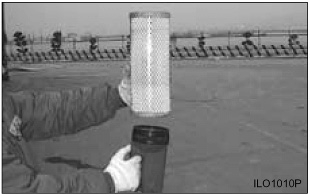

Checking Element  Typical Example Insert a light inside the clean dry element and examine it. Discard the element if tears, rips or damage are found. Wrap and store good elements in a clean, dry place. Parent topic: Cleaning Filter Elements